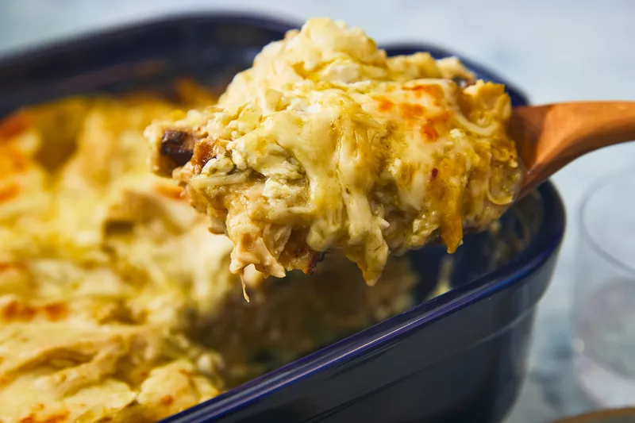

LAZANJE SINE

There's nothing quite like pulling a casserole out of the oven and seeing its top bubbly hot with a rich layer of cheese. If you can't get enough flavorful and gooey cheese in your everyday casserole dishes, opt for one of our 15 cheesiest casserole recipes.
From Tater Tot and enchilada casseroles to pasta bakes and rice, each meal is sure to be decadently cheesy. And if these still aren't enough cheese for you, well, just add more.
- 6 cups water
- 2 cups uncooked grits
- 3 cups shredded Cheddar cheese, divided
- ½ cup butter, cut into pieces, divided
- 1 pound ground pork sausage
- 12 large eggs
- ½ cup milk
6 cups water
2 cups uncooked grits
3 cups shredded Cheddar cheese, divided
½ cup butter, cut into pieces, divided
1 pound ground pork sausage
- salt and pepper to taste
- Preheat the oven to 350 degrees F (175 degrees C). Lightly grease a large baking dish.
- Bring water to a boil in a large saucepan; stir in grits. Reduce the heat, cover, and simmer until liquid has been absorbed, about 5 minutes. Mix in 2 cups Cheddar cheese and 1/2 of the butter until melted.
- Cook sausage in a skillet over medium-high heat until browned and crumbly, 5 to 7 minutes. Drain and add to grits mixture.
- Whisk eggs and milk together in a bowl. Pour into the skillet used to cook the sausage. Lightly scramble eggs over medium-low heat, then mix into grits mixture.
- Pour grits mixture into the prepared baking dish. Dot with remaining butter, sprinkle with remaining 1 cup Cheddar, and season with salt and pepper.
- Bake in the preheated oven until lightly browned, about 30 minutes.